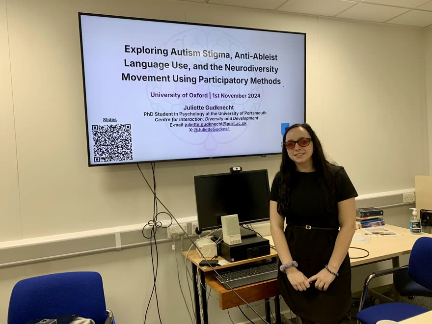

I'm a federal data scientist and data steward working on IDEA Section 618, the 12 national data collections on infants, children, and students with disabilities. I build quality checks, dashboards, and reports that turn complex public data into usable information.
U.S. Department of Education · MS Applied Statistics, Columbia University
Keynote, OSEP Leadership Conference, U.S. Department of Education.
50citations
10publications
1,200people at my largest keynote
8M+students counted in the data I steward
A few things I've worked on.
My work ranges from federal data collection and quality review to dashboards, public reports, and research.
Federal reporting and automation
I lead the IDEA Discipline and Personnel collections, including their static tables, and work directly across four other Section 618 collections. A lot of my current work is about making federal reporting faster, more consistent, easier to maintain, and more useful for program decisions.
Automating the Discipline and Personnel static tables in Python, from source files through validation, suppression review, and accessible output.
Calculated the IDEA GPRA performance measures used in the Department's Congressional Justification.
Built reusable quality checks and Section 508 reporting templates now used across OSEP.
I authored the four most recent OSEP Fast Facts releases. They translate complex findings, definitions, and limitations into concise plain language, accessible charts, and enough context to read the numbers responsibly.
The releases include editions on IDEA's 50th anniversary, the Annual Report to Congress, and disability categories.
I am building a large dashboard from public IDEA Section 618 data. It is designed to bring the 12 collections into one place, with national, state, county, and district views instead of separate files and reports.
The current build includes 16,742 districts, NCES locale data, source notes, accessible reporting views, and tools for exploring changes over time.
About
I like the parts of data work that are easy to overlook: definitions, validation checks, suppressed values, documentation, and accessibility. Those details determine whether a dataset can actually be trusted. I also like the point where the data leaves the spreadsheet and has to make sense to someone else.
I also published autism and education research and led the Autism and Neurodivergency Advocacy Association. Both shaped how I think about public data: every record represents a person, and clarity is part of doing the work well. (Views my own, not my employer's.)
I check public data carefully and explain it clearly. I also published autism and education research and led a nonprofit that supported neurodivergent people. (These views are my own.)
Career journey
Jan 2025 to present
Data Analyst (Education Program Specialist)
U.S. Department of Education, Office of Special Education Programs
I serve as one of the key data stewards and subject-matter experts for IDEA Section 618 reporting, which includes 12 national data collections on infants, children, and students with disabilities. I work directly across six of those collections.
Run the IDEA Discipline (2023–24, 2024–25) and Personnel (2024–25) collections and their static tables end to end, from requirements through validation, suppression review, publication, and documentation. The Discipline data tracks how often students with disabilities are suspended, expelled, or removed from class, and the Personnel data counts the special-education teachers and staff who serve them. I published the 2023–24 Discipline data on ED’s Open Data Platform.
Represent the Office of Special Education Programs on two federal data-governance boards: the EDFacts Data Governance Board and the Office of Planning, Evaluation and Policy Development (OPEPD) Data Literacy Workgroup.
Steward data that covers more than 8 million students with disabilities, from infants and toddlers under IDEA Part C to school-age students under Part B. It underpins the roughly $15 billion in federal formula funds that IDEA sends to states each year, so getting it right shapes how much support reaches classrooms.
Co-author the four most recent OSEP Fast Facts releases, including the IDEA 50th anniversary edition, turning Section 618 data into accessible, Section 508-compliant data stories for the public.
Build an in-progress IDEA 618 dashboard from public data, with national, state, county, and district views, 16,742 districts, NCES locale data, source notes, and accessible reporting tools.
Project Officer for both national data centers: CIFR and the Weiss Center
More highlights
Work directly across six of the 12 national collections, regularly supporting Assessment and MOE and CEIS and contributing to Exiting, Child Count, and Educational Environments.
Contributed data to and served on the team responsible for the IDEA Annual Report to Congress, the federal government's yearly report on the state of special education across the United States.
Built Python automation for the Discipline and Personnel static tables, data-quality checks, and validation, plus reusable Section 508-compliant templates now used across OSEP.
Oversee 15 grants worth more than $20M a year, including two national data centers: the Center for IDEA Fiscal Reporting as Co-Project Officer and the Weiss Center as Lead Project Officer, where I also review accessibility deliverables.
Provide technical assistance to state data managers year-round through office hours and calls with the national TA centers (IDC and DaSy), including 15 state follow-up calls through collection close.
Calculated the IDEA GPRA performance measures for the Department’s Congressional Justification in Python.
Co-delivered a keynote to 1,200 people at the OSEP Leadership Conference, with additional talks at the DaSy Center and Center for IDEA Fiscal Reporting (CIFR).
Member of the Federal Interagency Working Group on Autism (FIWA), which coordinates autism research and services across United States agencies.
2021 to present
Founder & CEO
Autism & Neurodivergency Advocacy Association
Founder and Chief Executive Officer of a 501(c)(3) nonprofit advancing neurodiversity through research, education, and international partnerships. Produced a Neurodiversity Awareness Day with Columbia University that drew more than 300 attendees.
2023 to 2025
Inclusive Education Co-Chair
UNESCO · Sustainable Development Goal 4 Youth & Student Network
Selected from more than 1,500 applicants to represent youth in global education policy. Authored policy briefs and led trainings on disability inclusion at international forums. Organized and co-moderated the network's 2024 International Day of Persons with Disabilities panel on inclusion in higher education.
U.S. Department of Education, Institute of Education Sciences
A three-year internship at the Institute of Education Sciences (IES), the Department's statistics and research arm, including research with restricted-use NAEP data. Spent the final six months at the Office of Special Education Programs, right before joining OSEP full time.
Conducted quantitative and qualitative research on autism and special education, co-authoring peer-reviewed studies published in Autism and Exceptional Children.
2023 to 2024
International Disability Rights Intern
U.S. Department of State
Supported the Office of International Disability Rights on a narrative-change initiative advancing the human rights of people with disabilities, coordinating across public affairs and diplomatic channels.
2022
Data Science / Analytics Intern
NASA · Goddard Space Flight Center
Applied ARIMA (time-series) models to social-media analytics and built dashboards that the Hubble Space Telescope team continues to use.
2021 to 2022
Intern
Office of the Director of National Intelligence
Helped design and stand up the intelligence community's Autism at Work initiative, a hiring and onboarding program that brings autistic professionals into intelligence-community roles.
2021
Data Science Intern
Geisinger
Built regression models across 90,000 patient records to study autism and co-occurring genetic disorders, and produced COVID-19 forecasting to support operational planning.
2020 to 2021
Data Science Intern
U.S. Department of State · Singapore Embassy
Built the data-scraping and modeling logic for a neural network predicting visa application outcomes, contributing to a system that improved the visa process and reduced errors.
2020 to 2024
Data Science Intern & Neurodiversity Advisor
Authentic Social (startup)
Built analytics models forecasting sales growth to guide the company’s financial decisions, and later advised the team on neurodiversity-inclusive practices.
2020 to 2021
Data Science Intern
Leda Health (startup)
Analyzed large survey datasets on sexual assault, presented findings to company leaders, and helped build the company’s analytics infrastructure.
2019 to 2020
Computational Astrophysics Researcher
NASA Kepler · Bloomsburg University
Led an independent study of NASA Kepler Space Telescope time-series data using Fourier analysis, presenting findings at four academic conferences.
Skills
Keep the meaning intact.
Data stewardship, validation, statistical suppression, data dictionaries, documentation, standardization, governance, and data literacy.
Make repeat work repeatable.
Python, R, SQL, SAS, SPSS, regression, time series, statistical modeling, machine learning, and repeatable quality-control workflows.
Show the data clearly.
Power BI, Looker, Excel, dashboards, technical and narrative reports, data visualization, and quantitative findings for nontechnical audiences.
U.S. Department of Education, Office of Special Education Programs
Lead the 2023–24 and 2024–25 Discipline and Personnel collections and their static tables, and support the MOE/CEIS, Assessment, and Part C Child Count collections. QC, validation, and Section 508-accessible public displays.
U.S. Department of Education, Office of Special Education Programs
Authored the four most recent OSEP Fast Facts releases, including the IDEA 50th anniversary, Annual Report to Congress, and disability categories editions, turning IDEA Section 618 data into accessible, Section 508-compliant data stories for the public.
U.S. Department of Education, Office of Special Education Programs
Contributed Section 618 data to, and served on the team responsible for, the IDEA Annual Report to Congress, the federal government's yearly report on the state of special education in the United States.
Building a large dashboard that brings the 12 IDEA collections into national, state, county, and district views, with 16,742 districts, NCES locale data, source notes, accessible reporting, and tools for exploring change over time.
Disability Dots
Personal project · public IDEA Section 618 data
A scrollytelling data story that turns national IDEA Section 618 data on students with disabilities into an animated, dot-by-dot walkthrough with plain-language explanations.
Python QC & Automation Toolkit
U.S. Department of Education, Office of Special Education Programs
Built Python automation for scoring-report parsing and quality-control checks, plus reusable Section 508-compliant reporting templates adopted across the division.
Accessibility at a National Conference
U.S. Department of Education, Office of Special Education Programs
Helped design the accessibility supports for a national special-education conference: an autism-friendly accessibility guide, a sensory guide, and an on-site sensory room. Also reviewed about 45 session proposals for accessibility.
Visa Outcome Prediction Engine
U.S. Department of State (intern)
Developed the data-scraping and modeling logic for a neural network predicting visa application outcomes; led the intern team through validation.
Out-of-School Reading Habits of Autistic Students
Poster at the Institute of Education Sciences (IES) · with Matthew Zajic
Latent profile analysis of restricted-use NAEP data on the out-of-school reading habits of 810 autistic 8th graders, from my IES internship.
Population Health Regressions
Geisinger
Ran regressions across 90,000 patient records on autism-linked genetic disorders, plus COVID-19 supply and trend forecasting.
Curious Universe Podcast Analytics
NASA · Goddard
Built an analytics dashboard for NASA's Curious Universe podcast, tracking episode performance and audience growth, and contributed insights to the show's team. NASA credits me by name on each episode page: “…with support from Caroline Capone and Juliette Gudknecht.”
Built a dashboard and statistical report using R and Google Data Studio, including ARIMA forecasting. Insights helped shape social media strategy and the dashboard is still used by the team.
Kepler Light-Curve Analysis
NASA · Kepler
Interpolated gaps and ran Fourier transforms on stellar time-series data from the Kepler Space Telescope.
Unpacking engagement in the neurodiversity movement: A latent class analysis of involvement, strengths-based perceptions, and self-advocacyGudknecht, Mair, Gillespie-Lynch, Gurba, Rivera, Kapp & Dwyer · INSAR, Seattle · 2025 · oral panel
Neurodivergent at Columbia: Lessons learned from a student self-advocacy clubGudknecht, Bakhteyar & Zajic · CUNY Neurodiversity Conference · 2024 · oral presentation
Characterizing the educational goals of autistic students: Latent class analysis with demographic and developmental covariatesZajic, Gudknecht & McIntyre · AERA, Philadelphia · 2024 · symposium
Identity-first versus person-first language: An examination of abstracts from 11 autism research journalsGudknecht & Zajic · INSAR, Stockholm · 2023 · poster
Large-scale cross-disorder study on penetrance and comorbidity of neuropsychiatric copy-number variantsLinner, Oetjens, Gudknecht et al. · Behavior Genetics · 2021 · poster
Awards & press
Public Humanities Graduate FellowshipSociety of Fellows & Heyman Center, Columbia University · 2023–24
I speak on accessible data, data storytelling, and neurodiversity, from United Nations panels to university stages.
OSEP Leadership Conference keynoteCo-delivered to 1,200 people at the U.S. Department of Education, Office of Special Education Programs.Image: Juliette Gudknecht co-delivering the OSEP Leadership Conference keynote.
More recent federal talksAn autism awareness presentation to the full Office of Special Education Programs, a fiscal-data event with 11 states for the Center for IDEA Fiscal Reporting, the DaSy Institute, and an AI session for my division.
The Right to Higher EducationA panel on higher education for students with disabilities at United Nations Headquarters.UNESCO covered the panel in its event recap and its ECOSOC Youth Forum report.Image: Juliette Gudknecht on a United Nations panel about the right to higher education for students with disabilities.
International Day of EducationPosed autism-advocacy questions to international leaders at United Nations Headquarters.Image: Juliette Gudknecht at the International Day of Education at United Nations Headquarters.
Safe spaces for autistic studentsA talk for the Global Campaign for Education, a worldwide coalition of education-advocacy groups.Image: Juliette Gudknecht speaking at the Global Campaign for Education.

Invited talk at the University of OxfordA talk on participatory autism research, using stigma and anti-ableist language as a case study (2024).Image: Juliette Gudknecht presenting at the University of Oxford.
Introduction to NeurodiversityThe annual Neurodiversity Awareness Day at Columbia University (2024).Image: Juliette Gudknecht presenting at the 2024 Neurodiversity Awareness Day at Columbia University.
Autistic Pride Day 2024A talk at the Autistic Pride Day celebration in Brooklyn, New York (2024).Image: Juliette Gudknecht speaking at Autistic Pride Day 2024 in Brooklyn, New York.
Neurodiversity Awareness Day openingCo-hosted the 2023 event at Columbia University with Ara Bakhteyar.Image: Juliette Gudknecht co-hosting the 2023 Neurodiversity Awareness Day at Columbia University.
I welcome conversations with federal data peers, public-sector reporting teams, research collaborators, and speaking organizers. I also take on the occasional side project when it stays clear of my federal ethics rules.